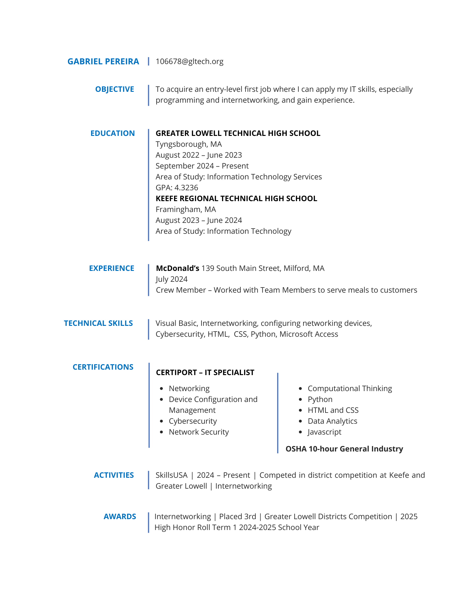

Welcome to my
digital portfolio
Hello, my name is Gabriel Pereira and I am a student at Greater Lowell
Technical High School. My specialty is with Information Technology, and this
digital portfolio serves to introduce myself through my resume, certifications, awards, and
work samples. I have a background in internetworking, but my current main
focus is programming and getting certifications in the broad field
of IT. My goal with this website is to illustrate the extent
of my abilities.
